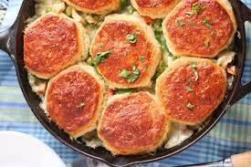

Lunch Boxes Biscuits

Perfect for Kids they will love them!!!
Biscuits with various fillings - perfect for kids lunch boxes. Once cooled, store biscuits in a sealed container or freeze
Ingredients
- 1 cup shredded Cheddar cheese
- ½ cup chopped ham
- 2 tablespoons pizza sauce
- cooking spray
- 1 (10 ounce) can refrigerated buttermilk biscuit dough, each cut into small pieces
Directions
- Step 1
- Preheat oven to 375 degrees F (190 degrees C). Spray 8 muffin cups with cooking spray.
- Step 2
- Mix Cheddar cheese and ham together in a bowl; fold in biscuit dough pieces. Add pizza sauce and lightly mix. Spoon mixture into the prepared muffin cups.
- Atep 3
- Bake in the preheated oven until biscuits are puffed and browned, about 20 minutes. Cool for 10 minutes before removing from muffin cups.